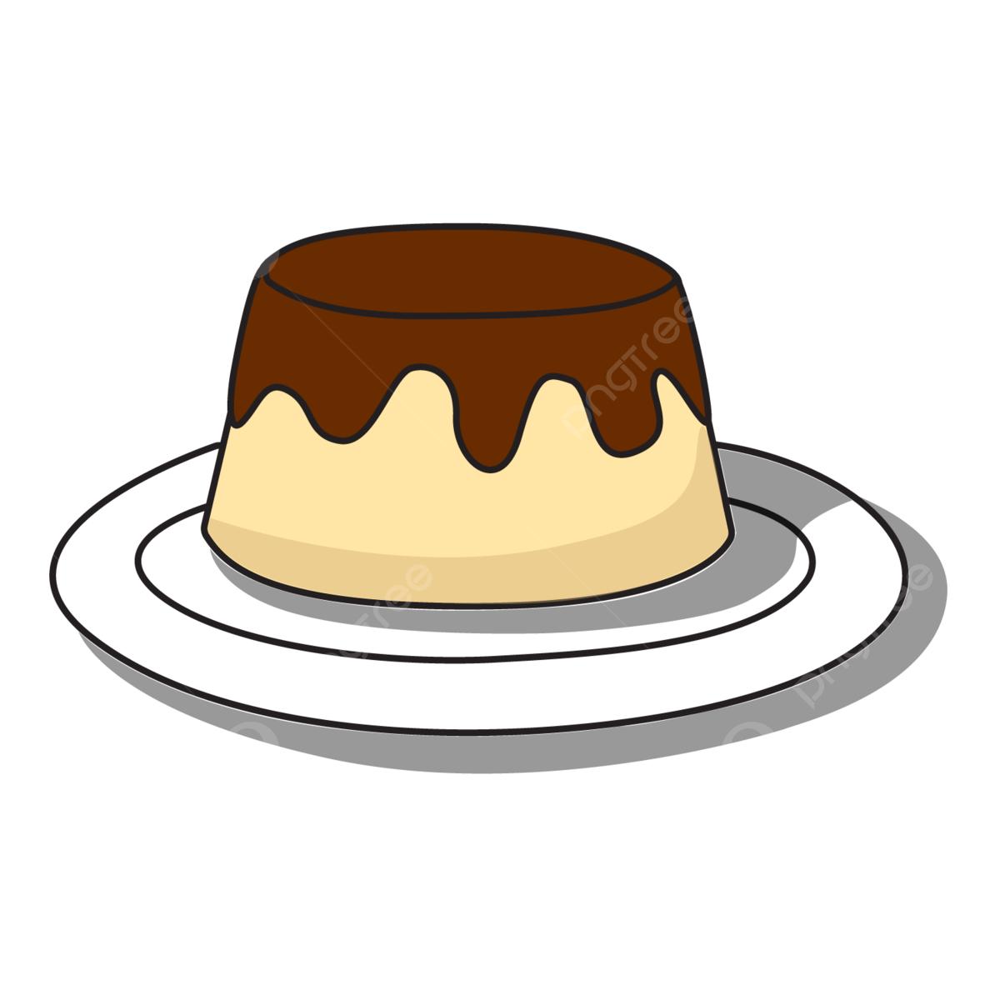

Tudo sobre Pudim! 🥄
O seu guia da sobremesa mais amada pelos brasileiros!

A origem do Pudim
A origem do Pudim é incerta, mas acredita-se que tenha surgido na Europa medieval, originalmente
como uma receita salgada, que levava até farinha de trigo.
Já o pudim doce, originou-se em Portugal: foi criada por um abade português. Sua receita original era composta
de açúcar, gemas, água e toucinho de porco.
'